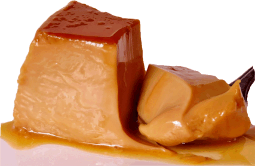

Pudin de doce de leite
Ingredientes
-
PUDIN:
- 380 gramas de doce de leite;
- 500 ml de leite;
- 4 ovos;
- 1 colher de chá de amido de milho.
-
CALDA:
- 300 gramas de açúcar;
- 35 ml de água.
Modo de Preparo
-
PUDIN:
- Bata no liquidificador o doce de leite, o leite, os ovos e o amido de milho.
- Tire o excesso de espuma da mistura.
- Despeje o creme nas forminhas pequenas ou na grande.
- Cozinhe em banho maria no forno baixo, a 150º C.
-
CALDA:
- Em uma panela média cozinhe o açúcar e adicione água aos poucos.
- Deixe ferver até chegar ao ponto fio.
- Colocar uma colher de sopa de caramelo em cada fôrma pequena individual ou todo o caramelo na fôrma grande. Reserve.